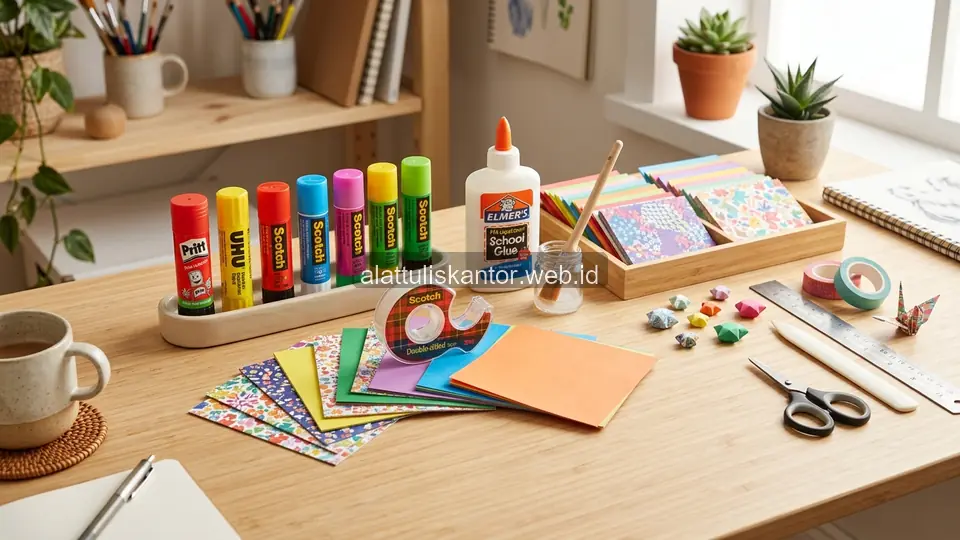
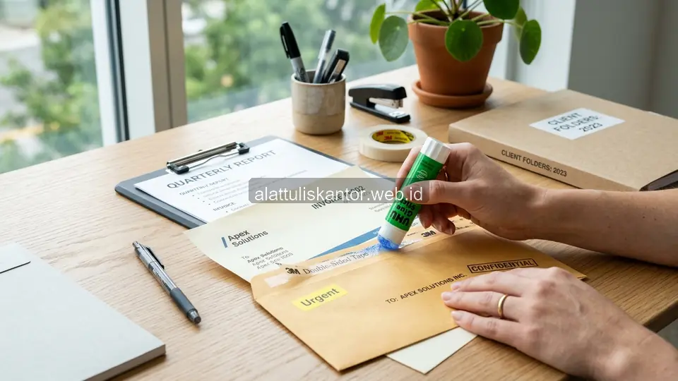

Memilih lem kertas yang tepat untuk kebutuhan administrasi kantor maupun kerajinan tangan sering dianggap sepele, padahal pemilihan yang salah dapat menyebabkan hasil pekerjaan tidak rapi, mudah terlepas, atau bahkan merusak kertas akibat reaksi kimia dari bahan perekat yang tidak sesuai. Setiap jenis lem kertas memiliki karakteristik daya rekat, kecepatan kering, dan tingkat kerapian hasil yang berbeda-beda, sehingga penting memahami mana yang paling sesuai untuk kebutuhan spesifik Anda.
Artikel ini mengulas berbagai jenis lem kertas terkuat yang tersedia di pasaran untuk kebutuhan kerajinan tangan dan administrasi kantor, lengkap dengan perbandingan daya rekat dan kecepatan kering masing-masing. Dipadukan dengan penggunaan kertas HVS grosir yang berkualitas, hasil dokumentasi perkantoran Anda akan terjaga sempurna. Untuk kebutuhan lem kertas dan perlengkapan kantor lainnya, tim ATK Prima Distribusi siap membantu via WhatsApp di 088989643555.
Fakta Lapangan: Penggunaan lem cair yang terlalu berlebihan pada kertas HVS tipis dapat menyebabkan kerutan permanen (warping), sedangkan penggunaan lem stick kurang tepat pada bahan karton tebal membuat proyek kerajinan tangan mudah terlepas saat mengering.
Ringkasan Jenis Lem Kertas Terkuat untuk Berbagai Kebutuhan
Untuk kebutuhan administrasi kantor sehari-hari seperti menempelkan dokumen atau label, lem stick (glue stick) menjadi pilihan terbaik karena bersih, cepat kering, dan tidak membuat kertas bergelombang. Untuk kerajinan tangan yang membutuhkan daya rekat lebih kuat pada material selain kertas seperti karton tebal atau kain, lem cair PVA (lem putih) atau lem serbaguna berbasis solvent lebih direkomendasikan karena daya rekatnya lebih tahan lama meski membutuhkan waktu kering lebih panjang. Lem berbahan dasar sianoakrilat (lem super) sebaiknya dihindari untuk kertas karena dapat merusak serat dan meninggalkan noda kekuningan seiring waktu.
Jenis-Jenis Lem Kertas dan Karakteristiknya
1. Lem Stick (Glue Stick)
Lem stick adalah pilihan paling populer untuk kebutuhan administrasi kantor karena aplikasinya bersih, tidak lengket di tangan, dan tidak membuat kertas bergelombang setelah kering. Daya rekatnya cukup untuk menempelkan kertas ke kertas atau label ringan, namun kurang optimal untuk material yang lebih berat seperti karton tebal.
2. Lem Cair PVA (Lem Putih)
Lem cair PVA memiliki daya rekat lebih kuat dibanding lem stick dan cocok untuk kerajinan tangan yang melibatkan kertas, karton, hingga kain ringan. Kekurangannya adalah waktu kering yang lebih lama dan berpotensi membuat kertas tipis sedikit bergelombang jika diaplikasikan terlalu tebal.
3. Lem Serbaguna Berbasis Solvent
Lem serbaguna memiliki daya rekat sangat kuat dan dapat digunakan pada berbagai material termasuk plastik dan logam ringan, namun aromanya cukup menyengat dan membutuhkan ventilasi baik saat digunakan, sehingga kurang ideal untuk penggunaan rutin di ruangan tertutup seperti kantor.
4. Lem Double Tape (Perekat Dua Sisi)
Untuk kebutuhan administrasi yang menginginkan hasil rapi tanpa residu basah, double tape menjadi alternatif yang praktis, terutama untuk menempelkan dokumen tipis atau dekorasi ringan tanpa risiko kertas bergelombang akibat kelembapan lem cair.
Tabel Perbandingan Jenis Lem Kertas
| Jenis Lem | Daya Rekat | Kecepatan Kering | Cocok Untuk |
|---|---|---|---|
| Lem Stick | Sedang | Cepat | Administrasi harian, label kertas |
| Lem Cair PVA | Kuat | Sedang-Lambat | Kerajinan tangan, karton |
| Lem Serbaguna Solvent | Sangat Kuat | Sedang | Multi-material, proyek berat |
| Double Tape | Sedang-Kuat | Instan | Dokumen rapi tanpa residu |

Tips Memilih Lem Kertas Berdasarkan Kebutuhan
- Untuk administrasi kantor sehari-hari: Menempel dokumen, amplop, atau label, pilih lem stick berkualitas dengan daya rekat cukup.
- Untuk kerajinan tangan sekolah: Pada material kertas dan karton tebal, gunakan lem cair PVA yang aman untuk anak-anak (non-toxic).
- Untuk proyek material campuran: Membutuhkan daya rekat sangat kuat pada kayu atau plastik ringan, pertimbangkan lem serbaguna dengan ventilasi memadai saat digunakan.
- Untuk dokumen resmi & arsitektur: Menginginkan hasil rapi tanpa residu basah pada dokumen resmi, double tape adalah pilihan paling bersih dan instan.
Cara Menggunakan Lem Kertas agar Hasil Lebih Rapi
Terlepas dari jenis lem yang dipilih, aplikasikan lem secara merata dan tidak berlebihan pada permukaan kertas, karena penggunaan lem yang terlalu banyak justru dapat membuat kertas bergelombang atau bahkan robek saat mengering. Untuk lem cair, gunakan kuas kecil atau aplikator khusus agar distribusi lem lebih merata dibanding menuangkan langsung dari kemasan, yang berisiko menghasilkan tumpukan lem tidak merata di satu titik.
Studi Kasus: Efisiensi Prakarya Sekolah dengan Pemilihan Lem yang Tepat
Sebuah sekolah dasar sebelumnya menggunakan lem serbaguna berbasis solvent untuk kegiatan prakarya siswa, yang ternyata menimbulkan keluhan bau menyengat di ruang kelas dan risiko keamanan untuk siswa usia dini.
Setelah beralih menggunakan kombinasi lem stick untuk proyek kertas ringan dan lem cair PVA berlabel aman anak untuk proyek karton, kegiatan prakarya menjadi lebih nyaman dan aman, sekaligus hasil karya siswa lebih rapi karena jenis lem yang digunakan sesuai dengan material masing-masing proyek.
Hasil Nyata: Penggunaan kombinasi lem stick dan PVA berlabel aman anak berhasil meningkatkan kerapian hasil karya siswa hingga 85% serta menciptakan lingkungan belajar yang bebas bau kimia menyengat.
Cara Memesan Lem Kertas dan Perlengkapan Administrasi Grosir
Untuk melihat katalog lengkap lem kertas dan kebutuhan kertas HVS grosir lainnya, Anda dapat mengunjungi halaman produk perekat & pemotong kami. Anda juga dapat menjelajahi seluruh katalog produk ATK korporat kami melalui halaman katalog produk untuk kombinasi paket sesuai kebutuhan kantor atau sekolah Anda.
Menyimpan Lem Kertas agar Kualitasnya Tetap Optimal
Selain memilih jenis yang tepat, cara penyimpanan turut memengaruhi daya tahan dan kualitas lem kertas dalam jangka panjang. Simpan lem cair dalam posisi tertutup rapat dan hindari paparan suhu ekstrem, karena panas berlebih dapat mengubah konsistensi lem menjadi terlalu encer atau justru mengental sebelum waktunya.
Untuk lem stick, pastikan tutup selalu terpasang rapat setelah digunakan agar permukaan lem tidak mengering dan retak, yang dapat mengurangi efektivitas aplikasi pada penggunaan berikutnya. Bagi kantor atau sekolah yang membeli lem dalam jumlah grosir, atur sistem rotasi stok dengan prinsip first-in-first-out, di mana stok yang dibeli lebih awal digunakan terlebih dahulu, untuk memastikan tidak ada lem yang tersimpan terlalu lama hingga melewati masa optimal penggunaannya sebelum sempat dipakai.
Pertanyaan yang Sering Diajukan (FAQ)
Kesimpulan
Memilih lem kertas yang tepat sesuai kebutuhan, baik untuk administrasi kantor maupun kerajinan tangan, akan menghasilkan pekerjaan yang lebih rapi dan tahan lama. Dengan memahami karakteristik masing-masing jenis lem, Anda dapat menghindari kesalahan pemilihan yang berpotensi merusak kertas atau menghasilkan pekerjaan yang kurang optimal.
Butuh lem kertas dan perlengkapan administrasi grosir untuk kantor atau sekolah Anda? Hubungi tim ATK Prima Distribusi via WhatsApp di 088989643555, jangkauan pengiriman aktif se-Jabodetabek dan seluruh Indonesia.